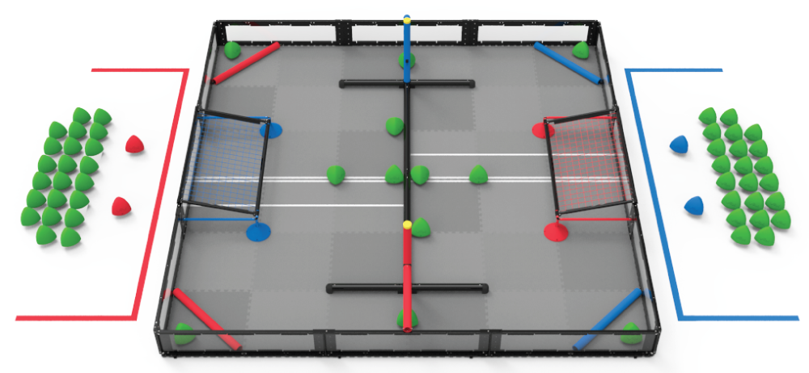

There are sixty (60) Triballs, two (2) Goals, and two (2) sets of Elevation Bars on an Over Under game field, which is divided by a Barrier. Triballs can be scored in the Goals and in Offensive Zones of the field. Each Triball scored in a Goal is worth 5 points. Each Triball scored in an Offensive Zone is worth 2 points. Robots can traverse the field however they choose, whether that's driving over the dividing Barrier or under either set of Elevation Bars. Triballs can only be removed from an opponent's goal if their two alliance Robots are on the same side of the Barrier, or "Double Zoned."
As the match clock winds down, Robots will try to outclimb their opponents to reach higher Elevation Tiers. At the end of the Match, the Robot that has climbed the highest will receive 20 points; the second-highest Robot receives 15 points; third gets 10; and fourth gets 5. Any Robots that share an Elevation Tier are awarded the same number of points based on their comparative height to the other Robots in the Match.
The Alliance that scores more points in the Autonomous period is awarded with eight (8) bonus points, added to the final score at the end of the match. Each Alliance also has the opportunity to earn an Autonomous Win Point by removing the Triball from their Alliance's Match Load Zone, scoring at least one Alliance Triball in their own Goal, and ending the Autonomous Period with at least one Robot contacting their own Elevation Bar. The Autonomous Win Point can be earned by both Alliances, regardless of who wins the Autonomous Bonus.